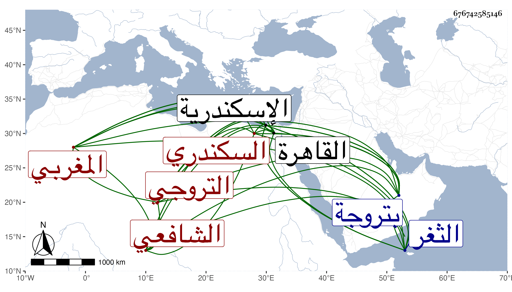

0902Sakhawi.DawLamic.ITO20230111-ara1.EIS1600.676742585146
Biography ID: 676742585146
715
خلف بن علي بن محمد بن أحمد بن داود بن عيسى المغربي الأصل التروجي المولد السكندري الشافعي . ولد سنة ستين وسبعمائة تقريبا بتروجة قرية قرب اسكندرية ثم انتقل به خاله العلامة البرهان إبراهيم بن محمد بن أحمد الشافعي بعد موت والده لسكندرية فقطنها ، وقرأ بها القرآن وأربعي النووي والحاوي والمنهاج كلاهما في الفقه والاشارة في النحو للفاكهاني وألفية ابن ملك وبعض المنهاج الأصلي ، وأخذ الفقه عن الشهاب أحمد بن إسماعيل الفرنوي وخاله البرهان والقاضي ناصر الدين محمد بن أحمد بن فوز والنجم محمد بن عبد الرحمن والشمس السنديوني والجمال محمود بن عثمان بن عبد المعطي ومحمد بن عبد الرحيم الرشيدي والنحو عن أبي القسم بن حسن بن يعقوب اليمني التونسي عرف بالطواب ولم ينتفع فيه بأحد انتفاعه بالعلامة البرهان إبراهيم بن محمد العقيلي الأندلسي ، وحج مرارا أولها سنة تسع وثمانمائة وتردد إلى القاهرة وحضر دروس السراج البلقيني ومن المالكية ابن خلدون وابن الجلال والجمال الاقفهسي وأجازه ابن عرفة ومما قرأه على شيخه الفرنوي الأربعين النووية ، وسمع عليه كتاب المنتخب في فروع الشافعية وأجازه وذكر عنه أنه قال لخصت في جنايات الحاوي عشرة آلاف مسئلة قال وله المرتب في الحديث والرد على الجهمية وفضائل اسكندرية ، وأخبر السراج عمر بن يوسف البسلقوني وهو ثقة أنه أجاز له باستدعائه البلقيني وابن الملقن والعراقي والصدر المناوي وقال هو إنه سمع على ابن الملقن جميع الموطأ حين قدومه عليهم سكندرية وإنه سمع الشفا في مجلس بقراءة البدر بن الدماميني والبخاري ومسلما على التاج بن الريفي القاضي كلاهما بقراءة التاج بن فوز ، وصار شيخ الشافعية بل والمالكية بالثغر بغير منازع وحكى أنه عرضت عليه ولايات ومناصب فأباها مع كونه يرتزق من كسب يده . قاله البقاعي وقد لقيه باسكندرية فقرأ عليه بعض الأجزاء ، وقال إنه بحث بحضرته مع السراج البسلقوني المذكور في مسئلة كان الحق معه فيها فترك المراء وأظهر أن الحق مع الخصم وأنشد إذا قالت حذام البيت . مات باسكندرية في العشر الأوسط من رجب سنة أربع وأربعين رحمه الله وإيانا .
